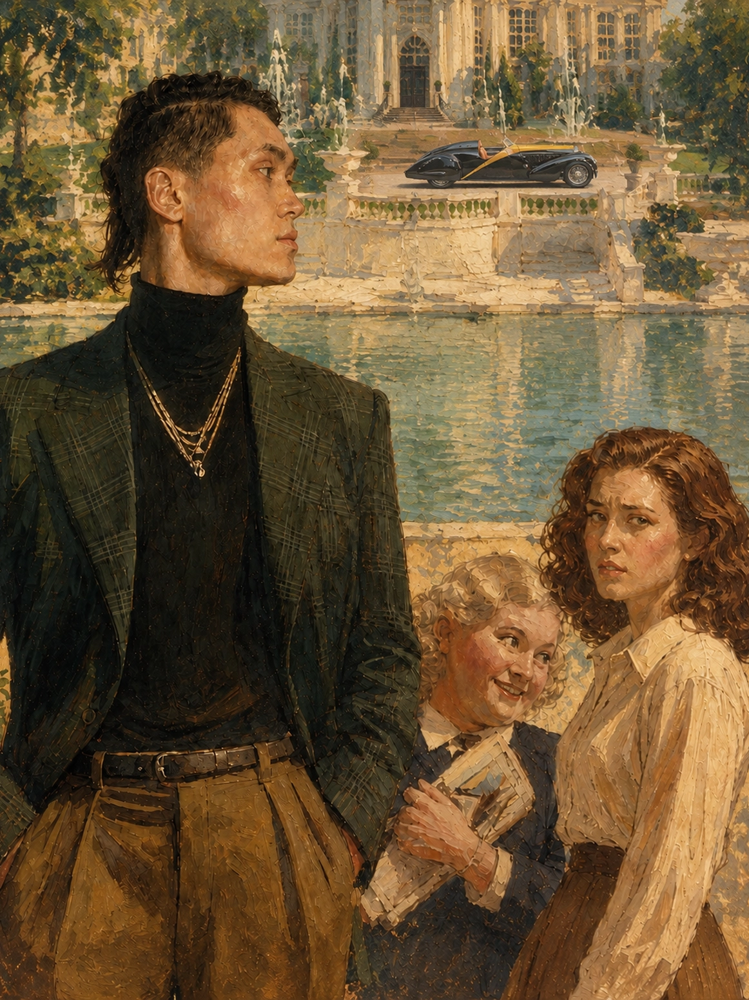

It's a video novel.
Read it like a book.
Watch it like a series.
$500
Ways to enjoy:
On an e-reader
Print edition
unavailable
Watch the video
performance
Ways to enjoy:
On an e-reader
Print edition
unavailable
Watch the video
performance
Римская Империя, I век нашей эры.
Вы — высоко уважаемый трибун, отправляетесь руководить легионами в Нижней Германии. Это унылые места, полные болот, политического напряжения и жесткой солдатской рутины. Но в вас томится счастье: Германец едет с вами.
Официально он – ваш раб. На деле: ведёт образ жизни легата, одежда у него – в годовые зарплаты простых солдат, а расписание дня – с роскошью императора. Плюс он чертовски красив, умен, а оттого в легионах не заканчиваются вопросы: «Да кто же он такой?»
А Римские границы Германии нынче неспокойны: легионы недовольны политикой Нерона, ваш статус шаток — император так и не назначил вас латиклавием, хотя вы исполняете все его обязанности. И теперь власть в регионе принадлежит и вам, и сенатору Эмилию, который определенно мутит что-то с поставками продовольствия. Это значит, что любые неприятности здесь могут сильно пошатнуть ваше положение.
Германские племена тоже не теряют времени. У них появился новый сильный вожак, который может объединить кланы против Рима, а их прорицательница Веледа уже обещает германцам победу, если они поднимут восстание.
Представьте себе: 13 век, небольшой город, в котором вы — дочь мельника, думали, что все у вас в жизни уже продумано и обеспечено.
Замужество. Своя мельница. Бизнес одним словом.
Но родители умирают, а на горизонте нет хорошего мужа. На горизонте: ваша непутевая младшая сестра, у которой все из рук валится. И старший брат, который прибрал все наследство к рукам, и в доме которого вы с сестрой теперь на птичьих правах и уже не хозяйки — работники.
Как поступить: быстро выскочить замуж за того, кто подвернется под руку? Или, может быть, раз так удачно в ваш город приехал ландкомтур — попросить его помощи и защиты? Он-то одним словом может решить вопрос, но захочет ли?
Если вы думали, с чего начать знакомство с 13-м веком и историей Герхарда — эта книга отличное начало.
Next Charachter
⬥ The e-book “The Beautiful Year I Died. Or the Perilous Life of a Secretary”.
⬥ A video novel. The author is also a talented actor, bringing
every scene to life
so vividly that you feel as though you're right there with the
characters — watching
their expressions, hearing every nuance in their voices, and
feeling their emotions.
You can watch each chapter like an episode of a TV series.
⬥ A readers' chat. Discuss scenes, characters, and the deeper
meaning
of the novel with other readers. Discover new perspectives and
see the story
in a whole new light.
⬥ Psychological deep dives into each chapter. Get inside the
characters' heads.
Learn from them how to think more clearly, understand yourself
better, and act
with greater honesty and courage.
⬥ Real-life problems explored through the characters'
experiences. Discover how
to build relationships, stand up for yourself, and achieve your
goals. And how to pull
yourself together and find the motivation to keep going on days
when life feels like
a tombstone pressing down on you.
Get your copy of “The Beautiful Year I Died. Or the Perilous Life of a Secretary”.

It's a dramatic reading brought to life by the author himself, Franz
Wertvollen.
Press play and discover the characters through their voices, facial
expressions, and personalities.
After your purchase, you'll get access to a channel where you can
watch the novel in video format.
Watch and listen whenever you like.
A video novel is all about the pleasure of watching an actor
perform.
Just one person in front of the camera, bringing an entire story to
life.
As the story unfolds, you'll feel as though you're going through
the same trials as the characters themselves.
But the world around them isn't created by a director or a set
designer. It's created by your
own imagination. And as your imagination comes alive, just a few
scenes in, you may find
yourself thinking: “I never knew I could do that…”